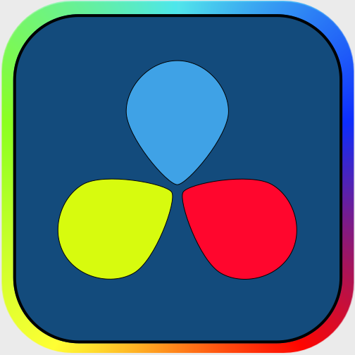

制作者の情報
Profile

なまえ｜富田修平i2224046
東京工芸大学/芸術学部/IM学科/1年/i2224046.htmlです。
よろしくおねがいします。
自分を表現したサイトを作れと言われたら何かこんなのが出来ました。
正直マイナージャンルなので説明が難しいですね。
ボカロくらい名が知られてたら説明しやすいのに。
htmlだけなら高校の頃に書いた事ありましたが、
当時書いたサイトは第一回講義レベルで、
黎明期の20世紀に作られたみたいなサイトでした。
cssの書き方や呼び出し方を今回初めて知って、このようなサイトが完成しました。
講義のおかげで一気にパワーアップ出来たと思います。
- 出身 静岡 育ちは神奈川県川崎市 一般川崎市民
- 趣味 ソフトウェアトーク関連の動画を作る・見る
- 悩み 上記趣味に支配されすぎて初対面の人との共通話題が無い
- 特技 創作狂い 何処かに行っては音素材のサンプリングやテクスチャ素材を撮影している
芸術学部なんだからみんなもっと狂え - 興味 作曲・絵を描く・同人誌制作
- 部活 写真部 一応部長だったはず（高校）
- 部活 天文部（大学）
主な使用ソフト

偶に使うソフト



アイコンについて
MediBang Inc - http://medibangpaint.com/en/, CC 表示-継承 4.0,
https://commons.wikimedia.org/w/index.php?curid=49133735による
Vaughan Johnson (initial upload to SVN) - Part of Audacity source code released under GPLv2.,
GPL, https://commons.wikimedia.org/w/index.php?curid=22458728による
Connection